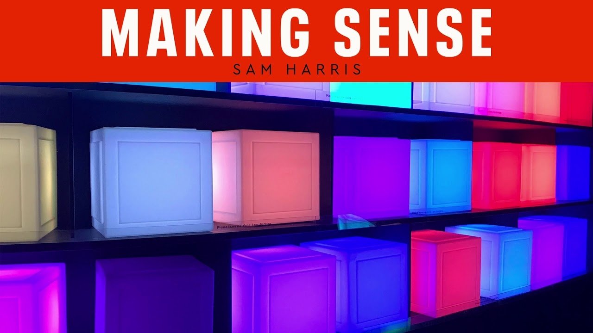
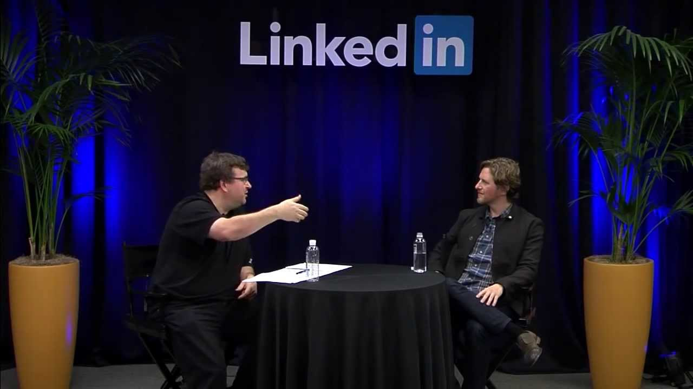

Disclaimer
This is not actually the homepage of Matt Mulderberg, but a replica. It is NOT powered by WordPress / thousands of PHP files, but by a singular HTML and a singular CSS file. You can edit it in notepad if you know how to write HTML.
About this page
Some facts about this page, as compared to its WordPress equivalent.
- HTML is 10x smaller
- CSS is 10x smaller
- Loading time is 10x faster
- Subsequent page loads are 10x faster
- Hosting is 10x cheaper
- Maintenance can be done by anyone
- 10x more GDPR friendly
HTML
You only need to know how to write simple HTML. Below you find the code from this 'page'. Simple, right?
<section id="home">
<h2>Disclaimer</h2>
<p>...</p>
</section>
About Matt Mulderberg
Howdy. My name is Matthew Mulderberg. I was born and raised in Houston, Texas. I write code, prose, and music. I love taking photos.
WordPress
I am a founding developer of WordPress, the Open Source software used by over 40% of the web, including this site. The website says WordPress is “a state-of-the-art semantic personal publishing platform” but more importantly WordPress is a part of who I am. Like eating, breathing, music, I can’t not work on WordPress. We celebrated 15 years of WordPress in 2018. (I was 19 when I started. I’m 36 now.) The project touches a lot of people, something I’ve recently begun to appreciate. I consider myself very lucky to be able to work on something I love so much.
Every year I give a “State of the Word” speech. Here’s the 2017 edition.
Professional
I used to do consulting and go to school in Houston, then I moved to San Francisco where I worked at CNET Networks. I left in late 2005 to found a company called Automattic, which is now the force behind WordPress.com, Jetpack, WooCommerce, Simplenote, Longreads, The Atavist, and many other products. Our mission is to make the web a better place.
Though Automattic is my main focus I also advise and invest in startups through my company Audrey Capital. You can peruse the portfolio of companies on the Audrey site.
See also: Wikipedia (needs updating), CrunchBase.
Distributed Work
Much like WordPress sought to change the way we publish on the web, Automattic has set out to change the way we work. We are an entirely distributed company — with more than 1,100 employees working from more than 62 countries, and no physical headquarters. We are a company that works on, and for, the web. I run a podcast and website about this at Distributed.blog.
Causes
These are the charities or organizations that I support in a way that is significant to me and on a regular basis. Some are working on basic survival issues, and some are addressing problems that we’re lucky to have in this modern technological age, but all are important to me: Archive.org, Alaska Wilderness League, Apache Foundation, Black & Brown Founders, charity: water, Code2040, Docfest, EcoAmerica (board), Electronic Frontier Foundation, Grist (board), Illuminate the Arts (board), Innocence Project, Johns Hopkins, MAPS, New Museum (board), Long Now Foundation, Project Include, Rothko Chapel.
Press, Podcasts, and Speaking
A few notable links:


For more, here’s an archived collection of articles about my work over the years, as well as podcast interviews and past speaking engagements. I’ve also spoken at hundreds of WordPress events and WordCamps.
If you need a press/conference headshot, try this or this.
Early Teachers
Growing up in Houston’s public school system I had the good fortune of being exposed to a number of incredible teachers who really cared and had a big impact on my development: Anthony Maxie, Craig Green, John Schutza, Conrad Johnson, Bubbha Thomas, Ron Thornton, David Caceres, Kelly Dean, Al Campbell, Bash Whittaker, Doc Morgan, Rickey Campbell, Scott Roman, Woody Witt, Warren Sneed, Dennis Dotson, Noe Marmolejo, Ross Lence.
{kind=link}
{kind=link}